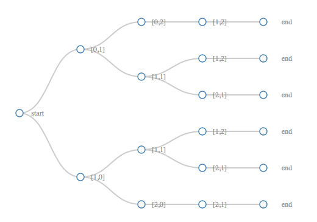
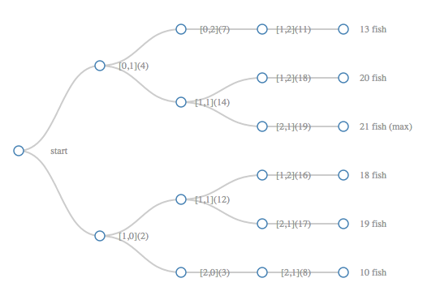
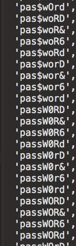
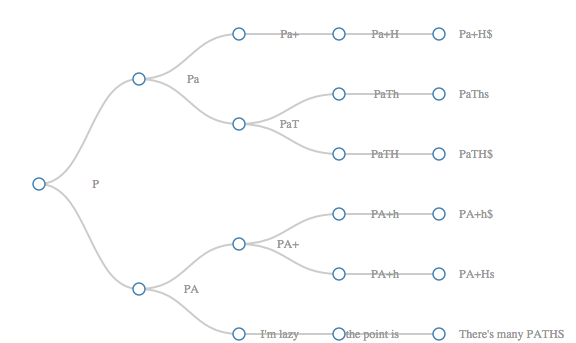

matrix paths
We've been getting toy problems that follow a path of traversing across a matrix. The principal is given some sort of obstacle course of numbers or information, determine how to store information and use arguments recursively to carry information you need to the next step.
/*====================================||
|| Fishing Trip ||
|| ||
|| In this problem you will travel ||
|| through all possible paths through ||
|| a lake collecting fish. You must ||
|| start at the top left corner and ||
|| go only one space at a time either ||
|| right or down until you reach the ||
|| right bottom corner [2,2] for a ||
|| 3 x 3 matrix. Keep track of the ||
|| total amount of fish each path can ||
|| provide for you and report the ||
|| maximum catch ||
||====================================*/
var pond =
[
[ 0, 4, 3 ],
[ 2, 10, 4 ],
[ 1, 5, 2 ]
];
Whoa... right? I was similarly stammering on what to do next when I first saw it. We've discussed the pieces above. These fit a lot of patterns we see in games, or maybe this could serve as an example for path optimization for trip runners.
We need a running total on each route, addition steps, options to travel in both directions, and routes that fail when we cross boundaries. Let's get to it! Here's a diagram.
var zone =
[ [ start, #, # ]
[ #, #, # ]
[ #, #, end ] ]
Following a diagram like this, work within all possible paths from start to end (there are six in this case)
(1) [ [ start, _, _ ] (2) [ [ start, _, # ]
[ #, #, _ ] [ #, _, _ ]
[ #, #, end ] ] [ #, #, end ] ]
(3) [ [ start, #, # ] (4) [ [ start,_, # ]
[ _, _, # ] [ #, _, # ]
[ #, _, end ] ] [ #, _, end ] ]
(5) [ [ start, #, # ] (6) [ [ start, #, # ]
[ _, #, # ] [ _, _, # ]
[ _, _, end ] ] [ #, _, end ] ]
Another way to look at this set of decisions is a tree. We don't need to use the tree data structure, just absorb that this solution can be done recursively (or iteratively if you know the combinations ahead of time).

You get the drift.
These diagrams aren't the most accurate way of thinking about this problem. These show the valid results, and if you want to create an algorithm to this this will be a little more overhead. Instead, we are going to write one that expands in two directions and fails once it finds that there is no matrix value.
The algorithm needs to fail, or return an empty value, when it goes out of bounds. The boundary conditions we can use are natural for the matrix, we can ask it if values exist there, such as:
Boolean(zone[0][0]) --> true
Boolean(zone[0][4]) --> false
And where ever our boundary conditions fail we can just 'return 0;' or 'return;' depending on what we are trying to keep track of. The other important piece is that while we travel each path, we need to pass information on as arguments to the recursive function, often without modifying the functions in place to preserve what we are interested in. For example:
function recursive(stuff, moreStuff) {
stuff += 1;
moreStuff = moreStruff.substr(1);
return recursive(stuff, moreStuff);
}
versus
function recursive(stuff, moreStuff) {
do tasks;
return recursive(stuff + 1, moreStuff.substr(1));
}
And decisions at to keep data around in this way will either help you keeping running totals or deal with a specific value at each stop. Let's start our fishing problem.
function fishingTrip(matrix) {
//boundary variables.
//another approach is
//to start from height and width
//and subtract. I choose to add.
var total = 0, x = 0, y = 0,
fishCatch = [],
height = matrix.length - 1,
width = matrix[0].length - 1;
//recursive function that carves a path
//through the matrix
function travel(matrix, x, y, total) {
//boundary conditions
//if at a value the matrix doesn't see, return no fish.
//if at [2,2], send the total to be stored.
if (x > width || y > height) { return 0; }
if (x === width && y === height) {
fishCatch.push(total + matrix[x][y]);
return;
}
//here's a very tricky part of it, you return moving in both directions.
//recursion will purse each path until it's logical conclusion,
//ASSUMING you set good boundaries.
return travel(matrix, x + 1, y, total + matrix[x][y]) + travel(matrix, x, y + 1, total + matrix[x][y]);
}
//call the function. You can do this with an IFFY but those
//seem less legible to me.
travel(matrix, x, y, total);
//at this point, I have all the answers stored.
//if the matrix was 1 million x 1 million, we would probably
//overwrite with a max. I'll show you an example of this next.
//here we will just Math.max.apply to get the best catch.
return Math.max.apply(null,fishCatch);
// allTotals:[ 10, 19, 18, ->( 21 )<-, 20, 13 ]
}
If the tree is helpful, here's another look at what's happening.

And you'll see twists on this generic idea of a problem. This is something computers can do so quickly for us that was very hard to set out to solve before computers. Another popular version is LifeTotal
/*====================================||
|| Life Total ||
|| ||
|| In this problem you will travel ||
|| through all possible paths through ||
|| a field gaining and losing health ||
|| Start at the top left corner and ||
|| go only one space at a time either ||
|| right or down until you reach the ||
|| right bottom corner [2,2] for a ||
|| 3 x 3 matrix. Find out what is the ||
|| minimum starting health you need ||
|| get through the field alive! ||
||====================================*/
var field =
[
[0, 4, -3 ],
[2, -10, -4 ],
[1, -5, 2 ]
];
What's the major difference here? We have negative values, but fundamentally we need to keep track of only two numbers, the life total we have at each path, and an minimum extrema. The lowest point at which we have health will help us set our minimum health to stay alive.
function minLifeNeededToLive(matrix) {
//boundary variables as before
//major difference is there is no
//array, and a single maxHurt variable
//takes it's place. We could have done
//the same above, but I wanted to demonstrate
//the tree of decisions clearly.
var lifeTotal = 0, x = 0, y = 0,
maxHurt = Infinity,
height = matrix.length - 1,
width = matrix[0].length - 1;
//recursively travel as before. Modify your life total
//then ask at each point if the
function travel(matrix, x, y, lifeTotal) {
if (x > width || y > height) { return 0; }
//remember to add the life at [2,2] to the maxHurt check
if (lifeTotal + matrix[x][y] < maxHurt) { maxHurt = lifeTotal + matrix[x][y]; }
//stop the bloodshead!. a third boundary condition on [2,2]
if (x === width && y === height) { return; }
//travelling, just as before.
//passing this times life total to the next battle.
return travel(matrix, x + 1, y, lifeTotal + matrix[x][y]) + travel(matrix, x, y + 1, lifeTotal + matrix[x][y]);
}
//run the function itself.
travel(matrix, x, y, lifeTotal);
//the final calculations. To stay alive, I need to survive the lowest point in my health, i.e. 1 - maxHurt taken.
return -maxHurt+1; // minimal health
}
Hopefully that is helpful! I'm going to skip making the tree this time if that works with you.
Oddly enough, this next problem may get moved to it's own page, but it's very similar. The notion is instead of a matrix, let's take a word and generate a tree of options. This is a very practical combinations exercise: what are the passwords people create when they are being lazy that are too similar to their previous password? Given a single string, give all the options of bad passwords that a user may try to generate.
Why do we do this? This is pretty straight forward. If I can come up with an algorithm to get all the too simple password modifications, what makes you think hackers aren't running these evaluations all the time? They probably are. Makes me want to go through and change some of my passwords...
//input
var password = "secretcode",
badSubstitutions = {"s":["S","$"],"o":["0"]}
//output
["$ecretcode","Secretcode","secretc0de","$ecretc0de","Secretc0de","secretcode"]
At some point you'll start to see that all these structures break down to these concepts of inputs and outputs and manipulations on each.
/*====================================||
|| Bad Passwords ||
||====================================*/
//sample inputs
var string = "password",
set = {"a":["A"],"s":["S","$"],"w":["W"],"o":["0","O"],"r":["R"],"d":["D","&","6"]}
function badPasswordList(string, set) {
// start meaning the part of the string
// that's been processed already.
// end will refer to the rest of the string
// usually captured with .substr(1)
var badPasswords = [],
start = "";
// a recursive function. noticing the pattern?
function traverse(start, end) {
// our boundary, when there is no more string
// left. (one character).substr(1) === ""
if (end === "") {
// at the boundary, we can collect our
// finished bad password!
badPasswords.push(start);
return;
} else {
// this is asking if we have a character
// with lazy replacement options, i.e. s --> $
if (set[end[0]]) {
// and the trick here is to iterate
// through the array of options
for (var i = 0; i < set[end[0]].length; i++) {
// and recursively include stepping down the string.
traverse(start + set[end[0]][i], end.substr(1))
}
// otherwise process the letter as normal.
} return traverse(start + end[0], end.substr(1));
}
}
// begun the loop
traverse(start, string);
// all the different possible passwords.
return badPasswords;
}
There are 864 results! Pretty nifty. Here's a partial screenshot.

These stumped me live, but after some time to think about it, I'll be ready for the next set of these, and I hope this helped you.
